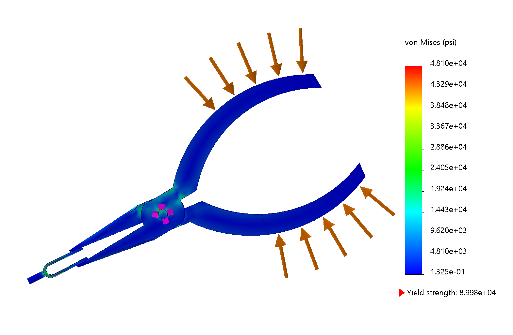
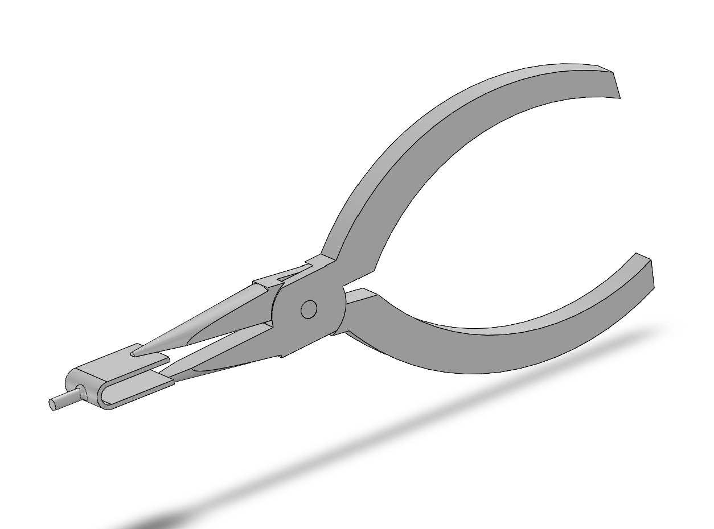
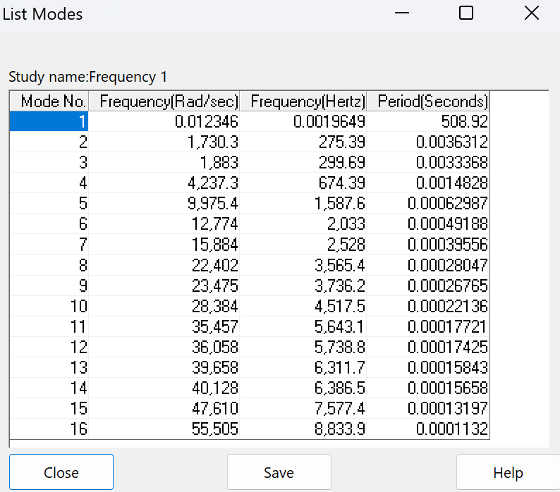
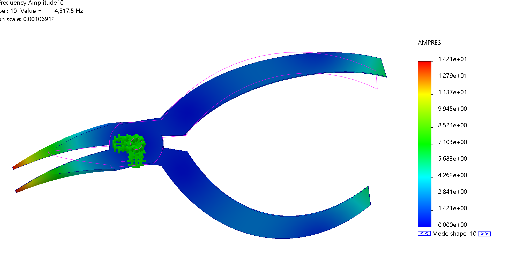

04 / CAD & Simulation
Needle-Nose Pliers — CAD & Structural Simulation
Computational Tools coursework focused on recreating a needle-nose pliers assembly from a provided engineering drawing and evaluating its structural and dynamic behavior using SolidWorks simulations.

CAD Modeling & Assembly
Using a provided engineering drawing, I modeled both plier jaws, the pin, and the fork in SolidWorks, then assembled the components using mates. This work focused on accurately reproducing an existing design and preparing the assembly for static and frequency simulations.


Static Structural Simulation
I applied a 40 psi pressure load to portions of the handles to examine the stress distribution throughout the assembly. The simulation showed the highest von Mises stresses near the pivot, reaching approximately 48.1 ksi compared with a listed material yield strength of 90.0 ksi. These results apply to the modeled loading condition rather than a physical strength test.
Frequency & Mode Shape Analysis
I performed a frequency study to identify the assembly’s natural frequencies and corresponding mode shapes. The study identified 16 modes, with the first occurring near zero frequency and the highest at approximately 8.83 kHz.
The first mode represented rigid-body rotation about the pin, while mode 5 showed torsional deformation. Other modes illustrated how the jaws and handles could deform or move relative to one another, even when overall translational mass participation remained low.



